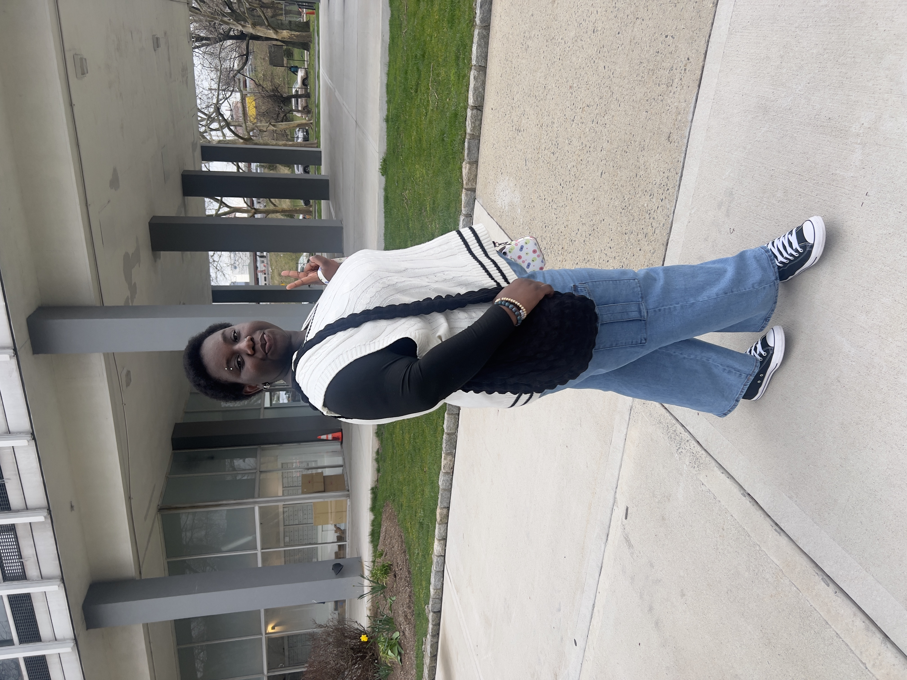

UI/UX Designer · Product Builder · Frontend Craft
Bright, human digital experiences built with design taste and real code.
I'm Aileen Naa Ayele Aryeetey, an Information Technology student at Kean University building products that feel polished, warm, and easy to trust.
Currently
New Jersey

A
Focus
UI clarity with personality
Approach
Concept, interface, and frontend execution
Selected Work
Projects with distinct visual direction and thoughtful product decisions.
Each project balances interface beauty with real usability, technical implementation, and a clear point of view.
01
Full Stack
Dear Stranger
An anonymous letter-writing app shaped around intimacy, safety, and emotional honesty.
React
Next.js
TypeScript
Supabase
OpenAI
Visit Site
02
Client Work
DAS Sterile Training
A healthcare training website redesigned for trust, accessibility, and simple content management.
React
TypeScript
Tailwind
WordPress
Visit Site
03
Full Stack
Gobɛ Hemaa
A Ghanaian food ordering platform with cultural warmth and real multi-gateway payment flows.
REST API
PostgreSQL
Prisma
Paystack
Flutterwave
Visit Site
Case Studies
How I think through product, layout, and experience quality.
These deeper notes show the logic behind the visuals, not just the finished surface.
The product needed to feel intimate without becoming chaotic.
I built the experience around soft pacing, atmospheric visuals, and a writing flow that reduced pressure. The star map discovery pattern turned users into constellations, making exploration feel reflective instead of noisy.
North StarMake vulnerability feel safe
Core FlowDiscover, write, send, reflect
Built WithReact, Next.js, Supabase, OpenAI
This site had to feel credible immediately.
I focused on structure, readability, and practical content pathways so students and hiring managers could find what they needed quickly. The frontend was paired with WordPress so the client could update it confidently after launch.
North StarTrust at first glance
Core FlowLearn, verify, enroll
Built WithReact, TypeScript, Tailwind, WordPress
The visual language needed cultural warmth without sacrificing checkout clarity.
I used expressive branding and familiar ordering patterns while keeping the architecture disciplined. Behind the scenes, payment handling across Paystack, Flutterwave, and Hubtel had to stay resilient and trustworthy.
North StarCelebrate culture and stay usable
Core FlowBrowse, customize, pay, confirm
Built WithREST API, PostgreSQL, Prisma, payment gateways
A
About Me
Education
Kean University, B.S. Information Technology
Recognition
Dean's List ×3
Study Abroad
Wenzhou-Kean University, China
Output
3 live products designed and built
I design directly in code because the small details are part of the product.
I'm studying Information Technology at Kean University, and I care deeply about the moments between intention and interaction: spacing, feedback, hierarchy, rhythm, and the confidence a user feels when a page behaves exactly the way it should.
I've shipped work across social products, client sites, and e-commerce. I studied abroad at Wenzhou-Kean University in China, and I like building interfaces that feel both beautiful and decisively usable.
Contact
Open to thoughtful teams, freelance work, and interesting ideas.
If you want a designer who also cares about implementation quality, motion, and product detail, I'd love to talk.
aileenaryeetey.naa@gmail.com